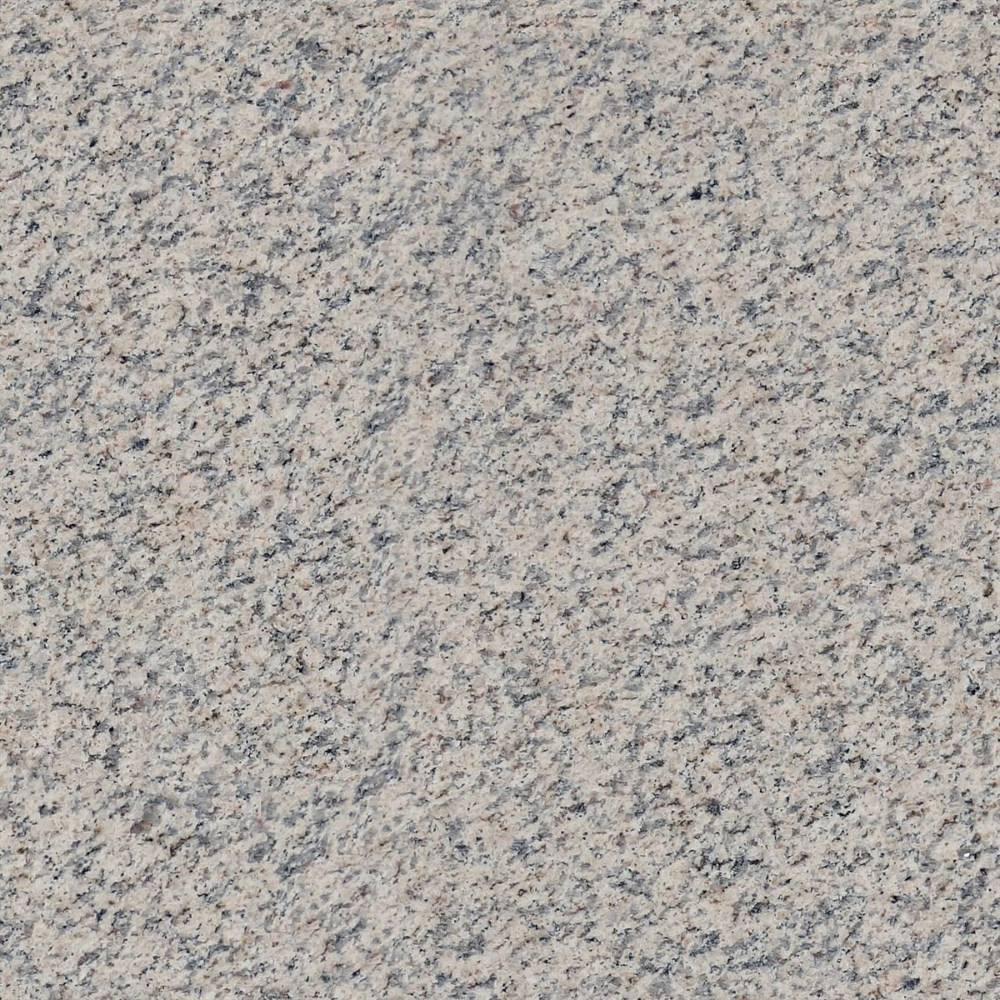

店のこと
下の臼と上の臼
お店について確認できているのは、所在地とInstagramのアカウントだけ。確認できたことを「下の臼」、制作側の想像を「上の臼」として分けました。
下の臼 / 確認できていること
- 店名は「パン工房conana」、業種はパン屋(ベーカリー)
- 所在地は兵庫県多可郡多可町加美区寺内１４０−３(〒679-1211)
- 電話番号はなし。連絡はInstagramから
- 営業時間・定休日・メニュー・価格・ご予約・駐車場は準備中
上の臼 / 制作側の想像
由来は分かりません。「工房」という言葉から、ものをじっくり作る場所かもしれない、と想像しました。粉と水と火、というシンプルな材料を思い浮かべながら、このページを作っています(実際のお店の姿ではありません)。
「上の臼」の部分は制作側が想像して書いたもので、お店の実際の様子・考え・メニューとは関係がありません。
イメージの写真
石・生地・パンのイメージ。
